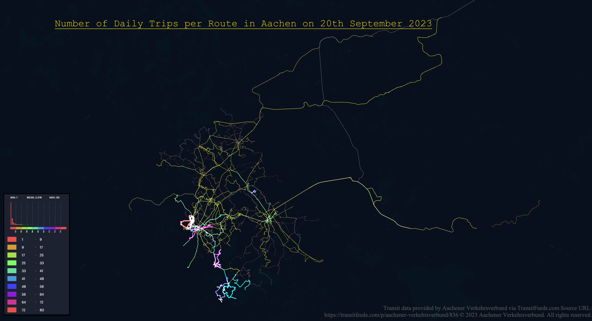
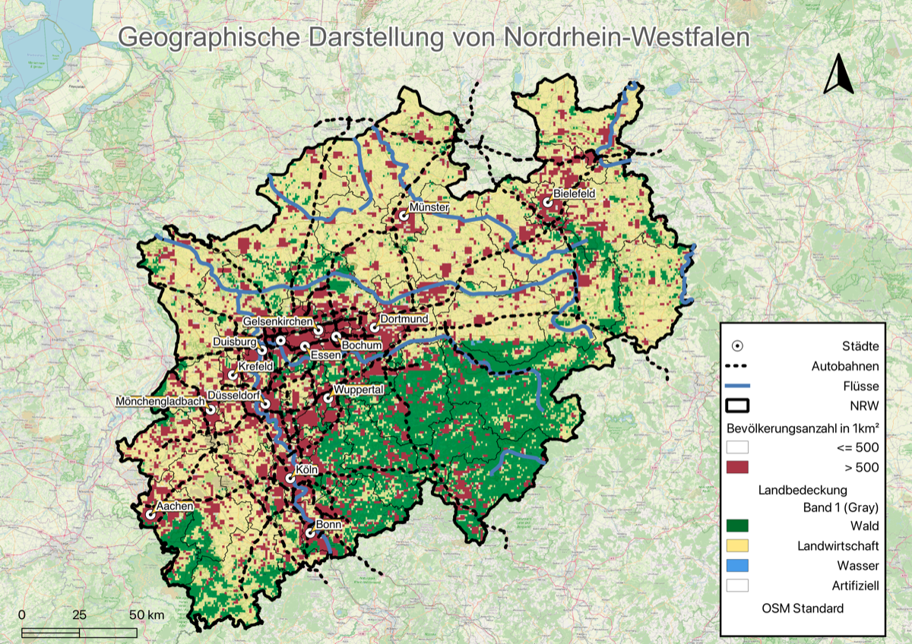
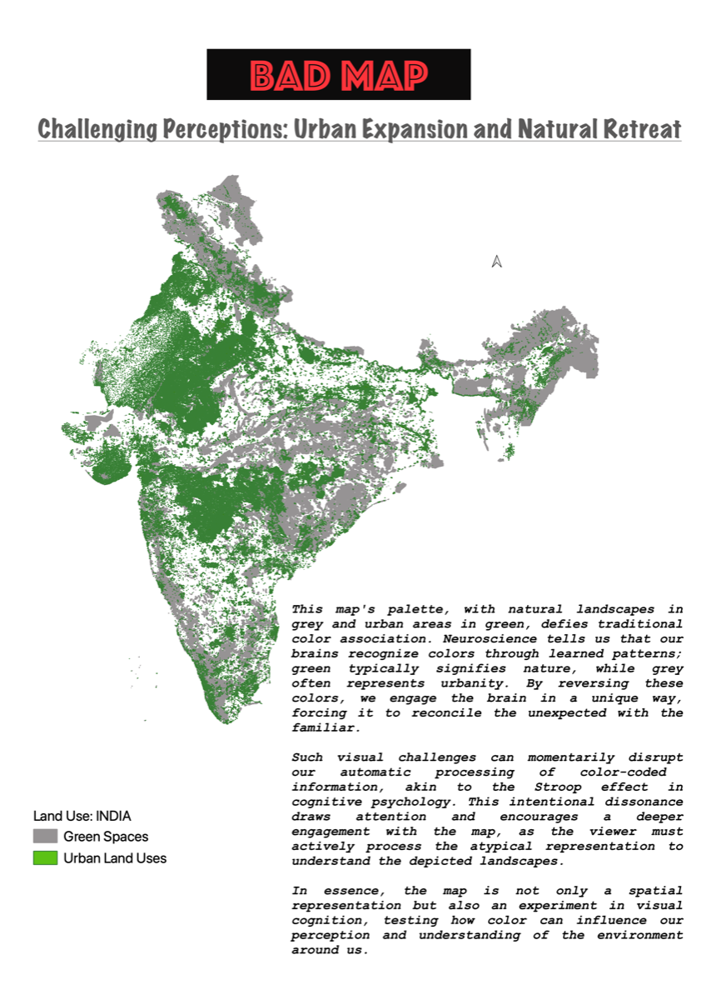
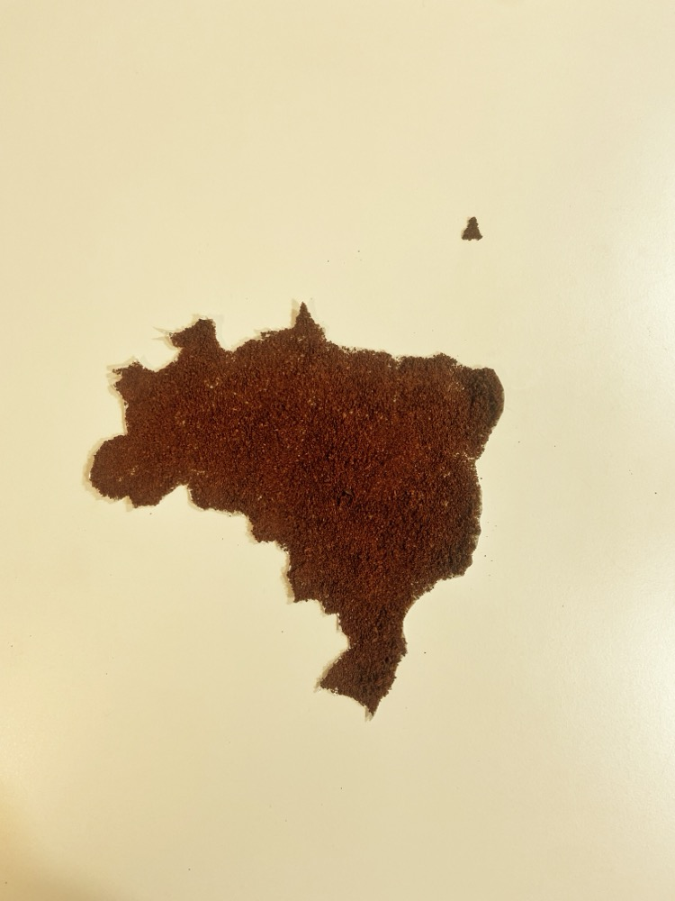
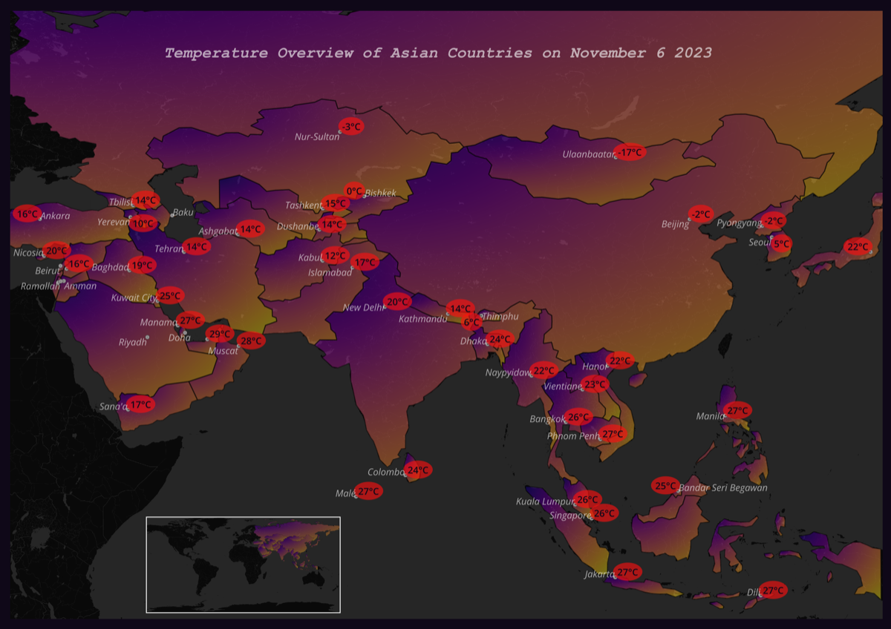
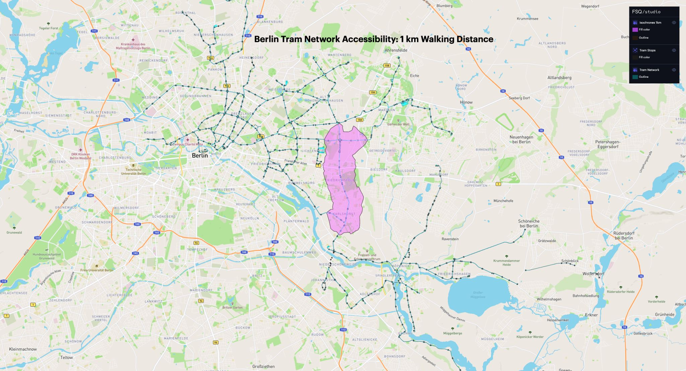
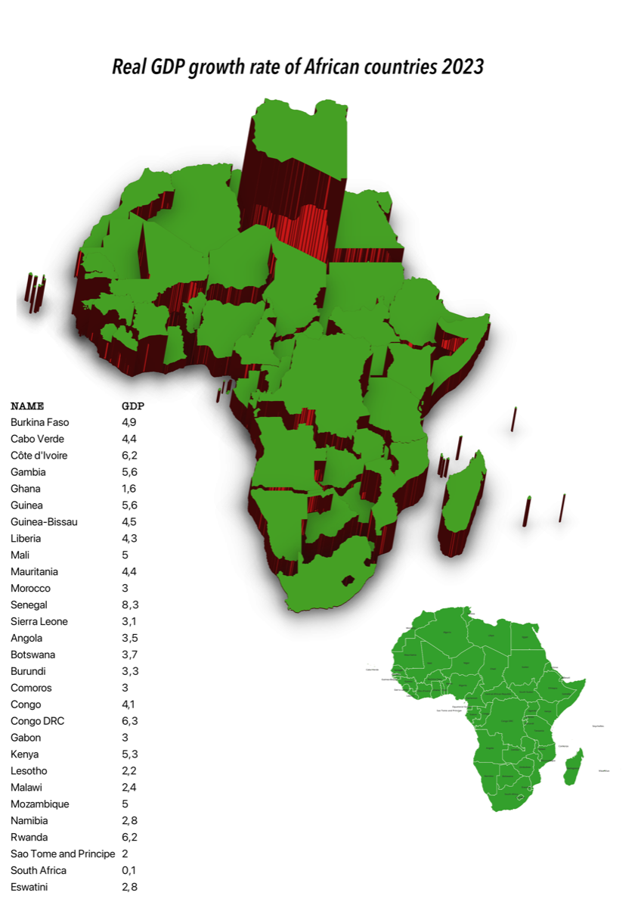
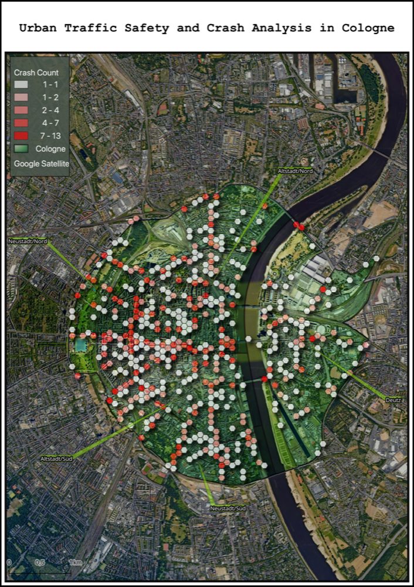
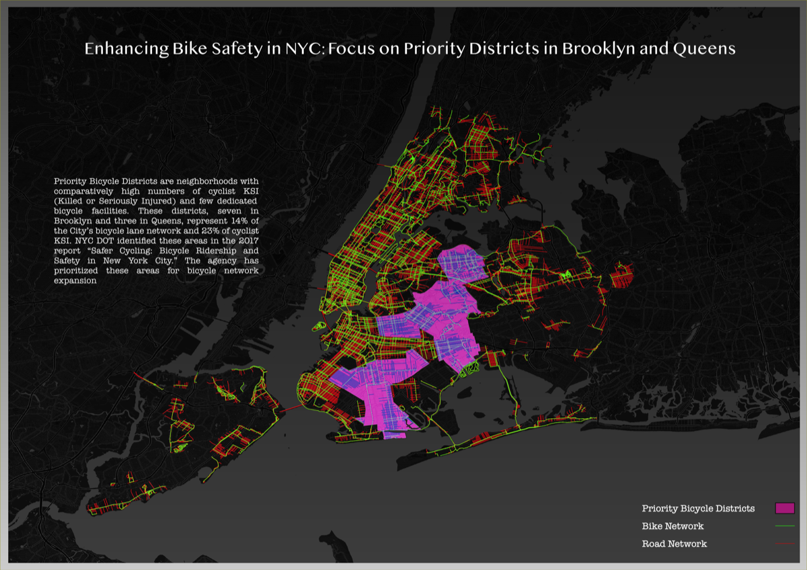

30 Day Map Challenge 2023 & 2025
Eine Sammlung von Karten aus dem #30DayMapChallenge 2023 und 2025 — verschiedene Tagesthemen, Werkzeuge, Datensätze und kartografische Stile.
Über den Challenge
Der #30DayMapChallenge ist ein jährliches Community-Kartierungsereignis, bei dem Teilnehmer im November täglich Karten zu einem neuen Thema erstellen und teilen. Es ist eine Gelegenheit, verschiedene Techniken, Werkzeuge und Datensätze zu erkunden — und räumliche Geschichten kreativ zu erzählen.
2025 — Karten
2025 — Eigene Daten
Für den Plan4Better-Team-Challenge verbrachte ich Zeit rund um den Marienplatz in München und skizzierte eine Route, die sich entlang von Rad- und Fußwegen in einen GOAT verwandelte.
2023 — Karten

Tag 1 — Punkte
Brauerei-Standorte als Punktdaten in Europa kartiert.

Tag 2 — Linien
Tägliche Fahrten ab Aachen als Routenlinien — Bewegungsmuster nach Routenrichtung und Verbindung visualisiert.

Tag 3 — Polygone
Flächennutzungspolygone in Nordrhein-Westfalen visualisiert.

Tag 4 — Eine schlechte Karte
Eine absichtlich irreführende Indien-Basiskarte, bei der städtische Gebiete grün und Grünflächen grau gestaltet wurden — zeigt, wie Farbwahl die Interpretation verzerren kann.

Tag 5 — Analoge Karte
Eine nicht-digitale Karte von Brasilien, aus Kaffeepulver gefertigt — für das Thema analoge Karte.

Tag 6 — Asien
Wetter-Visualisierung für asiatische Länder mit einer Live-Wetter-API zur Darstellung von Temperaturwerten auf dem gesamten Kontinent.

Tag 7 — Navigation
Berliner ÖPNV-Erreichbarkeitsanalyse mit GTFS-Daten und einem 1-km-Puffer über das OpenRouteService-Plugin.

Tag 8 — Afrika
Thematische Kartierung afrikanischer Länder mit statistischem Indikatoroverlay.

Tag 9 — Hexagone
Unfallanalyse in Köln mit einem Hexagongitter — sechsseitige Zellen zur Aufdeckung räumlicher Konzentrationen.

Tag 10 — Nordamerika
New Yorker Stadtteile mit hohen Fahrrad-KSI-Vorfällen und begrenzten Radwegen — verdeutlicht den Bedarf an verbesserter Radinfrastruktur.